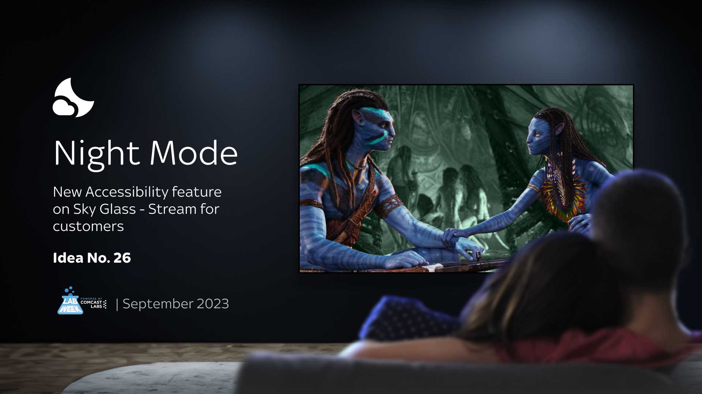
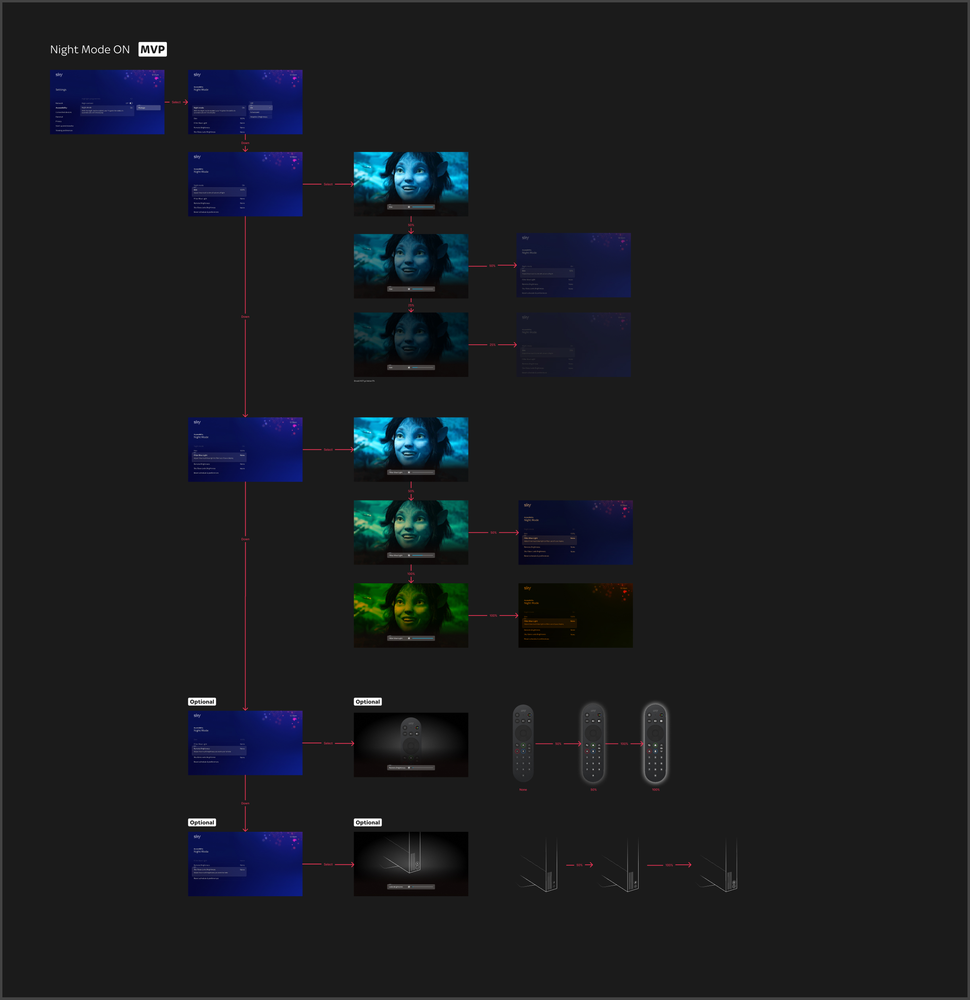
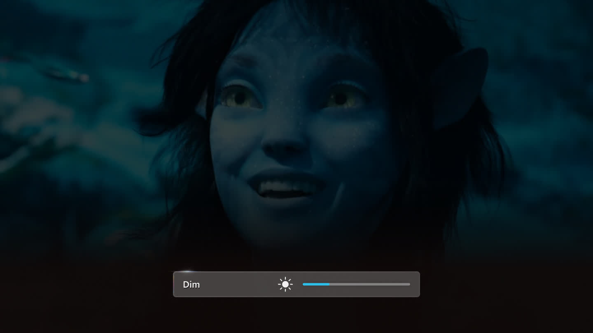
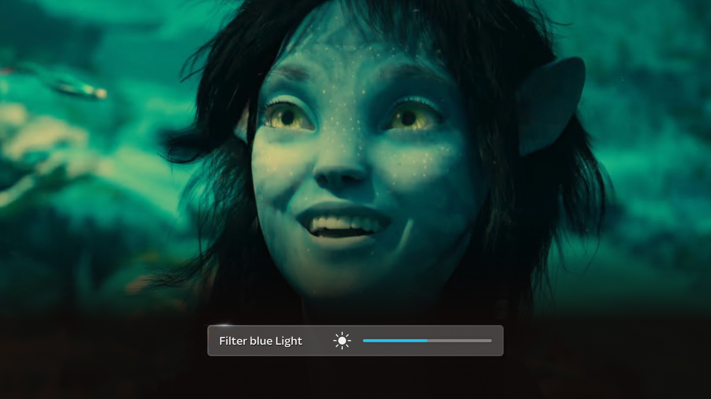
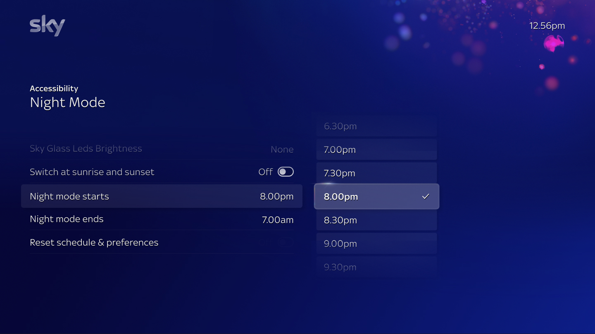
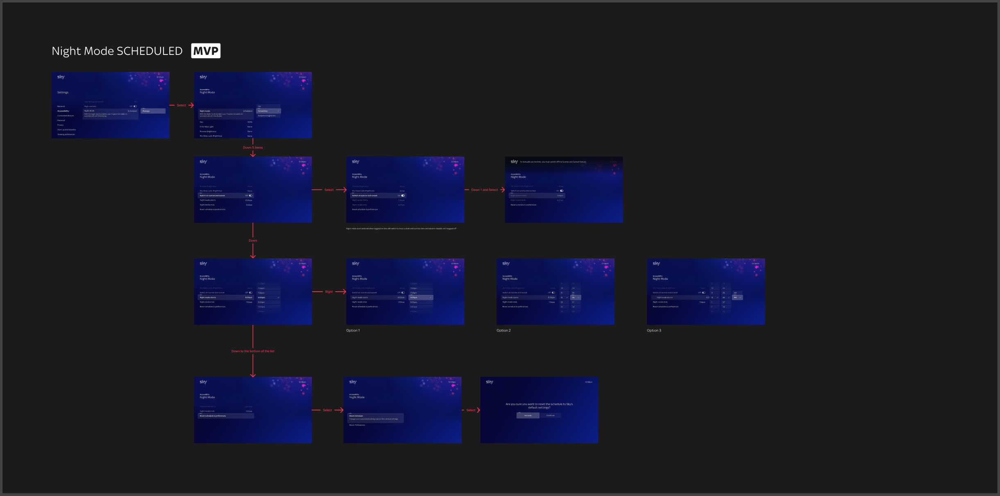
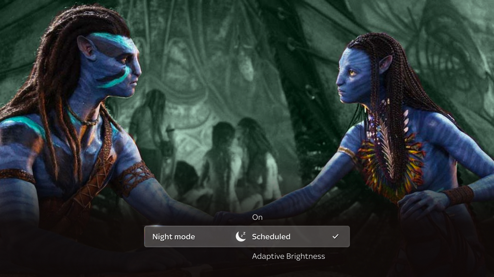
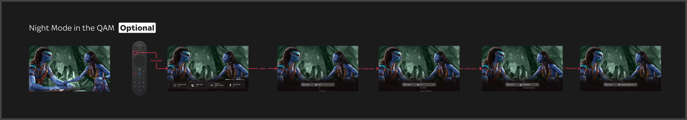
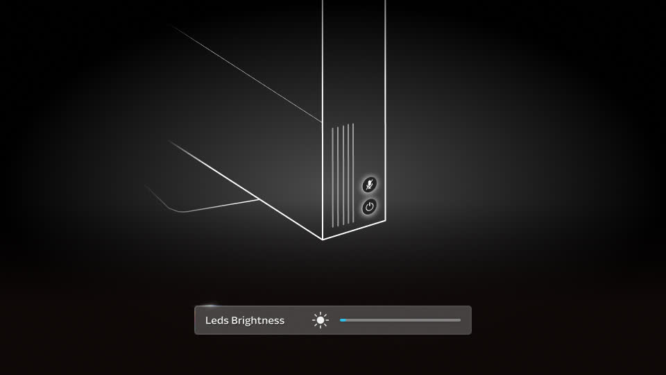
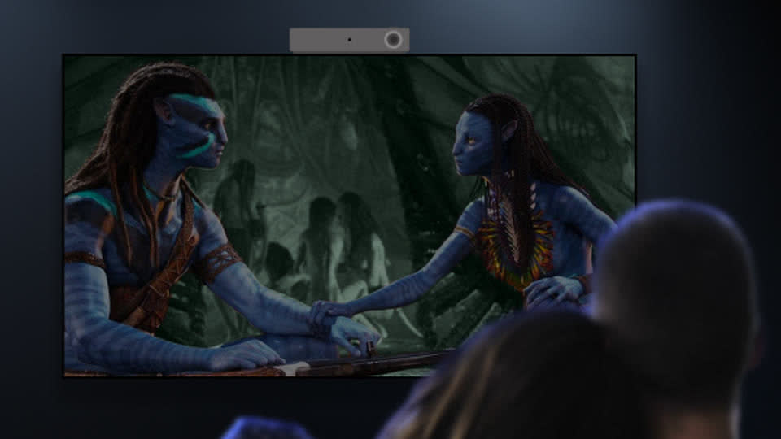

Too much light before bed
Long exposure to bright screens late in the evening is linked to disrupted sleep, and TV is often the last screen people watch.
Case study · Sky Glass & Stream · Accessibility
A new accessibility feature that gently dims the TV interface after sunset, so customers can wind down without being dazzled by a bright screen. I took it from idea to working demo as UI/UX designer and project manager, leading a team of seven.

01 — Overview
Night Mode started as my own idea during a company innovation week. The brief I set myself was simple: TV is often the last screen people look at before bed, so the interface should adapt to that moment instead of shining at full brightness all night.
As well as designing the experience, I ran the project: shaping the scope, planning the week and coordinating developers and testers so we could present a working feature at the end of it.
02 — Problem & opportunity
Long exposure to bright screens late in the evening is linked to disrupted sleep, and TV is often the last screen people watch.
There was no way to personalise the display to fit different customers’ routines, whether they wind down at 9pm or after midnight.
81.9%
of device users already use some form of dark or night mode.
The biggest device makers all offer modes that change how the screen looks. That’s a clear signal to build one that fits Sky customers’ night-time routine.
03 — Solution
Night Mode follows local sunset and sunrise times, automatically lowering screen brightness so watching TV late doesn’t get in the way of a good night’s sleep. Manual controls let customers fit it to their own schedule.
Less bright light after dark.
Automatic by default, adjustable by hand.
More comfortable viewing in a dark room.
Lower brightness uses less power.
Kinder to light-sensitive viewers.
04 — Design & flows
To get from idea to a working build in a week, the engineers needed to know exactly how every screen behaved. I designed the full set of flows on the Sky Glass interface: Night Mode off, on and scheduled, plus the optional extensions. Each step shows the remote control action that leads to it.
I labelled every flow as MVP or Optional. That kept the team focused on what we had to ship by the end of the week and left a clear backlog for later.
Night Mode sits under Accessibility in Settings. Dim and Filter Blue Light each open a slider over whatever is playing, so customers see the effect on real content as they adjust it. Dimming stops before 0%, so the screen can never go completely black.



Customers can switch Night Mode at local sunrise and sunset, or choose their own start and end times. Resetting the schedule and preferences is always one step away.


For faster access, I explored putting Night Mode in the Quick Access menu. A press of the remote lets customers switch between On, Scheduled and Adaptive Brightness without leaving what they’re watching.


05 — Demo
A walkthrough of Night Mode running on the Sky interface.
06 — Leading the team
I led a cross-functional team of seven alongside my design work. I set the plan and priorities, kept everyone aligned on what we were building and why, and made sure design and engineering moved together through the week.
07 — What’s next

Lower the brightness of the LEDs on the Sky Glass buttons and the remote control.
Add Night Mode to the Quick Access menu, so it can be changed without leaving the show.

Use the Sky Live camera to sense the light in the room and adjust brightness automatically.
08 — Final thoughts
Night Mode is less about technology than about how people feel at the end of the day. By dimming the display after sunset it makes TV more comfortable and more inclusive, and it quietly tells customers that we care about their well-being.
It’s one of the projects I’m proudest of, both for the feature itself and for how the team came together to build it.
Tools: Figma.
Keep reading
 02 — Xfinity · TV & gaming
Game destination on Xfinity TV
A games destination for Xfinity TV: one place to discover, play, watch and connect from the sofa, designed end to end from a product brief.
Read the case study
02 — Xfinity · TV & gaming
Game destination on Xfinity TV
A games destination for Xfinity TV: one place to discover, play, watch and connect from the sofa, designed end to end from a product brief.
Read the case study